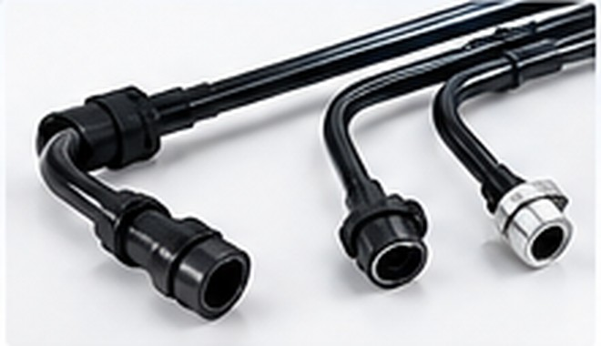
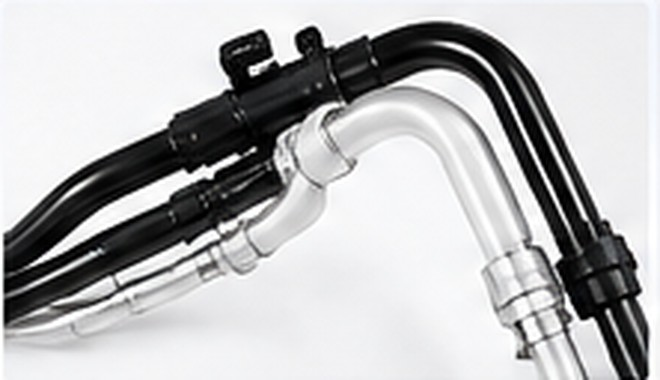
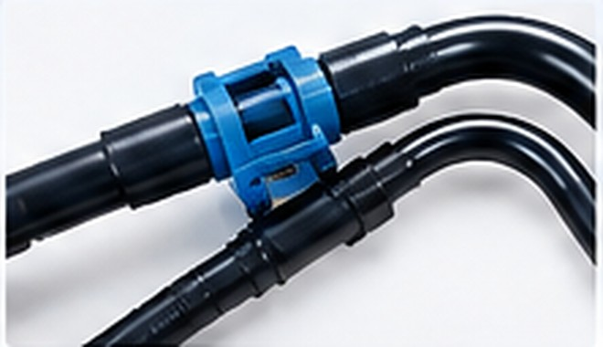
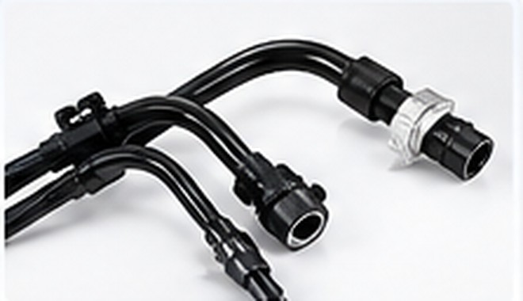
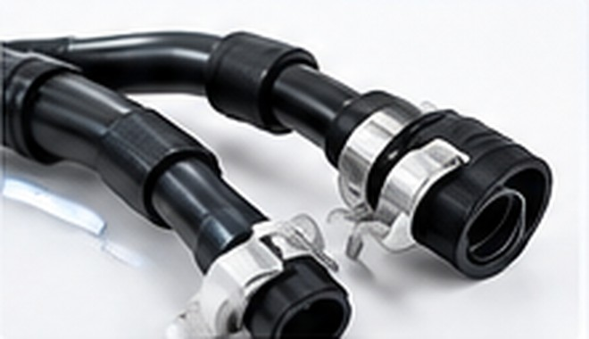
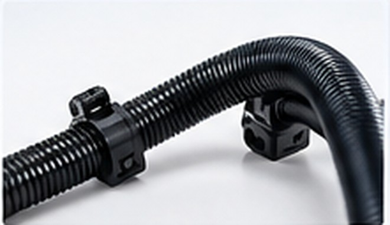

Fuel Line Assemblies
Fuel feed, return and delivery routing, with material and construction selected for the application.
Learn MoreENGINEERING & MANUFACTURING PARTNER TO AUTOMOTIVE TIER-1 SUPPLIERS
Application-focused polymer tube assemblies for fuel, emissions, air, vacuum and thermal-management systems.
Explore Our ProductsPRODUCT SOLUTIONS
Component-level solutions shaped around your routing, material and assembly requirements.

Fuel feed, return and delivery routing, with material and construction selected for the application.
Learn More
Routing assemblies for filler and in-tank applications, designed around package and interface needs.
Learn More
Fluid-routing tube assemblies for emissions after-treatment applications, subject to specifications.
Learn More
Polymer tube assemblies for selected pneumatic, vacuum and air-suspension routing applications.
Learn More
Selected coolant and auxiliary fluid-routing applications across vehicle platforms.
Learn More
Flexible drainage routing designed around vehicle packaging and specified fitment requirements.
Learn MoreABOUT RAY PRECICOMP
Ray Precicomp is a specialist engineering and manufacturing partner focused on polymer tube assemblies and related sub-assemblies. We work with Tier-1 customers on application review, material and routing considerations, component integration and production-development needs.
Learn More About Us
Automotive FocusSpecialist component and sub-assembly support
Collaborative DevelopmentWorking with customer engineering teams
Quality-Focused ExecutionAligned with agreed customer requirements
Focused on automotive tube assemblies.
Supporting customer development programmes.
Built around agreed inspection requirements.
From prototype feedback to serial supply.
Share your drawing or application details to start a component-level discussion.